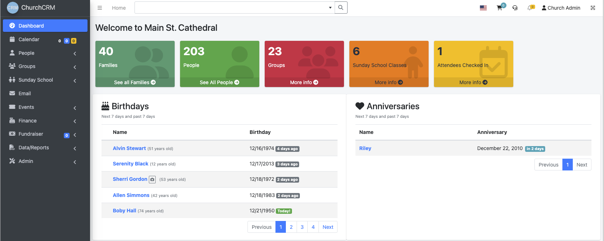
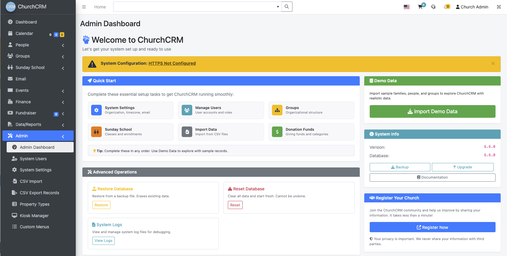
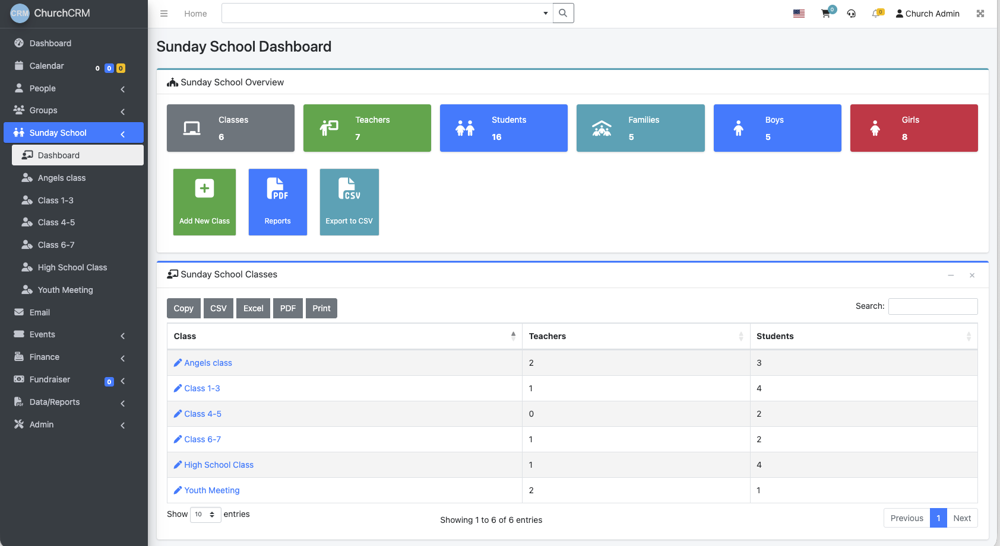

ChurchCRM
Free, Open-Source CRM System Built Specifically for Churches

Empower your church leadership with the tools to manage, connect, and serve your congregation better.
Free, Open-Source CRM System Built Specifically for Churches
Empower your church leadership with the tools to manage, connect, and serve your congregation better.
No licensing fees, no vendor lock-in. Your data belongs to you. ChurchCRM is completely open source, meaning you can customize it to fit your church's unique needs or deploy it wherever you prefer.
Web-based and mobile-friendly. Access from any device with a browser—desktop, laptop, tablet, or phone. Perfect for church staff managing information on the go or during services.
If your church already has a website, you likely have everything needed. ChurchCRM runs on standard LAMP (Linux, Apache, MySQL, PHP) infrastructure—often available from your existing web host at no extra cost.
Built with security at the core. Control exactly who has access to what information in your congregation. Role-based permissions ensure sensitive data stays protected.
Comprehensive congregation management with member profiles, family organization, contact information, attendance tracking, and custom fields. Easily manage who's in your church and key details about them.
Track tithes, pledges, and donations with giving reports and financial summaries. Manage deposits and generate detailed analytics to understand your church's financial health.
Support for 40+ languages with localized date formats, currencies, and addressing conventions. Serve diverse congregations worldwide and make ChurchCRM accessible in your community's primary language.
Role-based access control lets you define what each user can see and do. Pastors, staff, volunteers, and members each have the right level of access to sensitive congregational data.
Allow members to verify and update their own family information online.
Allow visitors to register and create accounts for online access.
Organize fundraising campaigns where members buy/sell items or services to benefit the church.
Import member data from CSV or export data for backup and analysis.
Create, manage, and track church events with automatic reminders and participant tracking.
Organize members into groups, committees, and ministry teams for better organization.
Track member skills and availability for church ministries and service opportunities.
Automatically display member photos from Gravatar or upload custom images.
Localization support for multiple languages and regional settings.
Automatic and manual backup options to protect your church data.
Ready to get started? View installation options →
Real screenshots from ChurchCRM showing powerful features in action

Overview of activities, quick links, and recent updates Try Demo
Manage giving, deposits, and financial reports Try Demo

Settings and user management for your ChurchCRM instance Try Demo
Secure access plus an option for visitors to self-register and create accounts Try Demo

Class and roster management for Sunday School programs Try Demo
Want to explore more? Try the live demo →